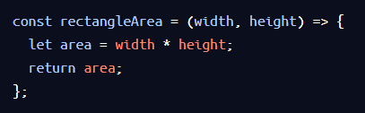
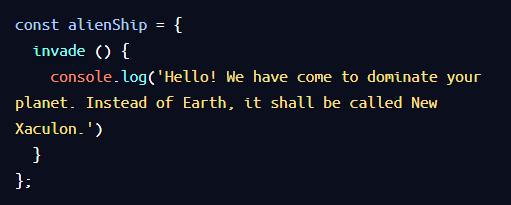
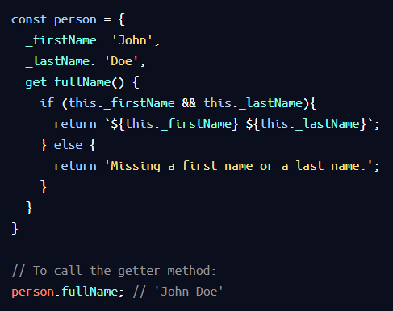
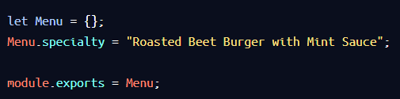

A function is a reuseable block of code that groups together a sequence of statements to perform a specific task.
Function Declarations: You need a function keyword, identifier (name) and function body.
Calling a Function: The code inside a function body runs, only when the function is called. To call a function, you need to type the the function name followed by parentheses.
Parameters and Arguments: Parameters allow functions ot accept input(s). These values that pass through the function are called arguments.
Default Parameters: Introduced in ES6, this allows parameters to have a predetermined value in case there is no argument passed into the funciton of if the argument is undefined when called.
Example: Click Me
Return: This allows a function to produce an output. Without this, the function will return undefined.
Helper Functions: Functions being alled within another function where, the return value of a function is inside another function.
Function Expressions: This is another way to define a function. To decalre in this way, decalre a variable with the variable being the identifer. Assign this to the function keyword followed by parameters and then the braces. To involve(call) write the variable name folled by the parentheses enclosing aguments. Unlike function declarations, function expressions are not hoisted so they cannot be called before they are defined.
Example: Click Me
Arrow Functions: This is a faster way to write functions.
Example: Click Me

Concies Body Arrow Functions: There are several ways to refactor arrow function syntax:
Functions that take only a single parameter do not paratheses. However, if a function takes zero or multiple parameters, parenthese are required. Example: Click Me
Single-line and multi-line blocks. Example: Click Me
1.2 Scope
Scope: Idea in programming that some variables are accessible/inaccessible from other parts of the program
Blocks: Statements that exist within curly braces {}.
Global Scope: The variables that are declared outisde of block. are accessible to every part of the program. These are called global variables.
Block Scope: The variables that are declared inside a block, is only accessible to the code within the curly braces {}. These are called local variables.
Global Namespace: Space in our code that contains globally scoped information. Put all global variables to the top.
Scope Pollution: When too many variables exist in a namespace or variable names are reused.
1.3 Arrays
Create an Array: Wrap items in square brackets [], with each element seperated by a comma.
Accessing Elements: Each elements position has an index. We can access an element by arrayName[indexNumber]
Update Elements: Update element 3 like array[2] = 'newThing'
let and const: Variables declared with const cannot be reassigned, but the elemetns can be updated. Variables declared with let can be reassigned.
The .length Property: This built in property will return the number of elements in an array.
The .push() Method: This is a built in JavaScript method which allows us to add items to the end of an array. .push() is a destructive method.
The .pop() Method: This is a built in JavaScript method which removes the last item of an array. .pop() is a detructive method.
The .join() Method:
The .slice() Method: This method will create a new array with the inputed elements. Non destructive.
The .splice() Method:
The .shift() Method: This method will remove the first item from an array.
The .unshift() Method: This method will add an element to the begining of an array.
The .concat() Method:
The .indexOf() Method: Returns the index of an element if it is in the given array.
Arrays & Functions: If an pass an array inside a function and it is mutated inside a function, the change will maintain outside the function.
Nested Arrays: When an array contains another array. To access, use a chain of bracket notation.
1.4 Loops
A loop is a programming tool that repeats a set of instructions untila specified condition (stopping condition) is met. Iterate is to 'loop.
The For Loop: The for loop includes a iterator variable which is initialized, check against the stopping condition and assigned a new value on each loop interation.
The While Loop: In situations when we want to execute a loop an undetermined number of times, a while loop is idea. The sytax starts with the keyword while followed by a stopping condtion. After is the we have the loop's code block.
Do...While Statements: For this case, the code will run at least once and then loop based o a specific condition after its initial run.
The Break Keyword: This keyword allows programs to 'break' out of the loop form within the loop's block.
1.5 Higher-Order Functions
Higher-Order Functions are functions that accept other functions as arguments and/or return functions as output.
Functions as Data: Assiging and reassigning functions to variables. JavaScript functions are first class objects, meaning they can have properties and methods.
Functions as Parameters: Functions that can be passed into other functions as parameters (call back functions).
The .forEach() Method: This method is used to execute the same code on every element in an array but doe not change the array and returns undefined.
The .map() Method: This method executes the same code on every element in an array and returns a new array with the updated elements.
The .filter() Method: This method checks every element in an array to see if it meets certain criteria and returns a new array with the elements that return truthy for the criteria.
The .findIndex() Method: This method returns the index of the first element of an array which satisifes a condition in the callback function. It returns -1 if none of the elements in the array satisfies the condition.
The .reduce() Method: Iterates through an array and takes the values of the elements and returns a single value.
Iterator Documentation: MDN;s array iteration methods page...make a url link here.
1.7 Objects
Object Literals: Objects can be assigned to variables just like any JavaScript Type and we use curly braces {}, to designate an object literal. The data is organized into key-value pairs.
Dot Notation: There are two ways to access an object's property, dot notation and bracket notation. Use dot notation to access the properties and methods of built-in objects and data instances.
Bracket Notation: You must use bracket notation when accessing keys that have numbers, spaces, or special characters in them. With bracket notation you can also use a varibale inside te brackets to select the keys of an object.
Property Assignment: Objects are mutable. We can use either notation along with = to add new key-value pairs, or change an existing property. You can delete a property from an object with the delete operator.
Methods: When the data stored on an object is a function, we call that a method. A property is what an object has, while a method is what an object does. An example of this is the global JavaScript object Math and .floor is a method on it. Object methods are invoked by appending the object's name with the dot operator followed by the method name and parentheses. There are two examples below, the first is the pre ES6 way of implementaing a method, whilst the later is the ES6 version.
Example: Click MeExample: Click Me
Nested Objects: It is common to see an object as another objects property. You can chain operators to access nested properties.
Pass By Reference: When we make changes to an object passed into a function, those changes are permanent.
Looping Through Objects: We can iterate through objects using the For...in syntax.
Example: Click Me
1.8 Advanced Objects
The this Keyword: The this keyword refers the calling object and can be used to access properties of the calling object. The object that a method belongs to is called the calling object. Methods do not automatically have access to other internal properties of the calling object. The value of this depends on where the this is being accessed from.
Arrow Functions and this: We cannot use arrow functions as methods if we want to access other internal properties i.e we cannot use arrow functions when we use this.
Privacy: The idea here is that only certain properties of an object should be mutable. JavaScript objects do not have built-in privacy, rather there are conventions to follow to notify other developers about the intent of the code. The usage of an underscore before a property name means that the original developer did not intend for that property to be directly changed.
Getters: Setters and getter methods allow for more detailed ways of acessing and assigning properties. Getters can:
perform an action on the data when getting a property.
Return different values using conditionals
Can access the properties of the calling object using this.
Example: Click me
Setters: Setters change or mutate the object. When calling a setter method, we do no need to use parentheses.
Example: Click meExample: Click me (calling setters)
Factory Functions: Factory functions allow us to create object instances quickly and repeatedly. A factory function does this by returning an object.
Example: Click Me
Property Value Shorthand: ES6 introduced some new shortcuts for assigning properties to variables known as destructuring. This mmethod allows us to add more properties with less keystroke for factory functions.
Example: Click Me
Destructured Assignemnt: Extracting key-value pairs form objects and saving them as variables.
A sign-up from can check if your user name is available without refreshing the page
A search box can give you suggested results while you type
Information that changes constantly such as sport result can load independently, without refreshing the page
JavaScript can fix layout issues
JavaScript can animate elements on a page
2.1 The Script Element:
The <script> Tag: The <script> element allows you to add JavaScript code inside an HTML file.
Example: Click Me
The Src Attribute: The script element allows us to write code in a html file, however it is best to write our JavaScript code in a seperate file.You can do this in a similiar manner as the css styles sheet using the src attribte. Place the src attribute within the first element tag.
Defer & Async Attribute: Browers come equipped with HTML parsers which read elements in order.Loading a script elements content may take time. The defer & async attribute of the <script> element to address the user wait-time. The defer attribute specifies scripts should be exectued after the HTML file. The defer attribute will inform the parser to load the script but defer the execution until it finishes parsing the HTML file. This is useful when a script contains functionality that requires interaction with the DOM. The async attribute loads and executes the script asynchronously with the rest of the webpage. Unlike the defer attribute, the async attribute will execute as soon as it is downloaded. This is useful when async scripts are independent of other scripts. The convention is to put the script tag in the <head> and use the defer & sync atributes.
2.2 The Document Object Model
DOM :The DOM is a language-agnostic structure implemented by browsers to allow for web scripting languages to access, modify, and update the structure of an HTML web page. The window you look at using DevTools is a visual representation of the DOM. Using JavaScript to manipulate the DOM will affect the browsers HTML file, hence the visuals on the screen. However, it will not effect the original HTML file, unless activity is stored in a database. It is a powerful tree-like structure that allows programmers to conceptualize hierarchy and acess the elemnts on a webpage. It is a Model that organizes a web page's HTML Document as an Object.
The DOM as a Tree Structure: The DOM follows similar logic to a family tree. The top-most node represents the HTML document with the decedents being the html tags and so on. We label nodes as the parent or child node to each other. Each node contains data. There are nine different types of node objects:
Element (most common to modify), Text
We can access the HTML attributes of each Element.
2.3 JavaScript and the DOM
What are the most useful methods and properties of the DOM interface in JavaScript
Document: The document object in JavaScript is the root node of the DOM tree. Before you can access a specific element in the page, first you must access the document structure itself. To access the <body> element, you type document.body.
Tweaking Elements: With .innerHTML you can access and set the contents of an element, add additionaly valid html inside an html element and modify its attributes/properties.
Example: Click Me
Select and Modify Elements: The.querySelector() method allows us to specify a CSS selector and then return the first element that matches that selector. To select elements with classes and tags, use # and . accordingly.The .getElementById() function gives access elements directly by their id.
Example: Click Me
Style an Element: The .style property of a DOM element provides accss to the inline style of that HTML tag. Syntax: Element.style.property, with property representing CSS property.
Example: Click Me
Create and Insert Elements: The .createElement(tagName) method creates a new element based on the specified tag name passed into it as an argument. In order to create an element and add it to the web page, you must assign it to be the child of an element that already exists. The .appendChild() method will add a child element as the last child node.
Remove an Element: The .removeChild() method removes a specified child from a parent. The .hidden property allows you to hide an element by assigning it as true or false
Example: Click Me
Interactivity with Onclick: The .onClick property allows you to assign a function to run on a click event on an element.
Traversing the DOM: Each node has a .parent & .children property. the property will return a list of element's. The .firstChild property will grant access to the first child of that parent element
Note: Every time you access an element, you must first assign this to a variable in JavaScript
Example: Click Me (Interactivity with onclick)
2.4 DOM Events with JavaScript
Learn to create interactivty with DOM events using JavaScript
What is an Event: Events on the web are user interactions and browser manipulations that you can program to trigger functionalty. Examples are a mouse click, webpage files loading or a user swiping right on an image. You can create iteractivty on a website by assigning a funciton to respond to a specific event firing.
"Firing" Events: After a spefic event first/occurs in the DOM, an event handler function can be created to run as a respone
Event Handler Registration: JavaScript interprets registered events as event objects with properties and methods. When you create an event handler function on a specific event, you create a property of the vent object. An event handler fuction is registered as a property attached to the DOM element being interacted with it. It is best practice to create named event handler functions, instaed of anonymous functions.
Example: Click Me
Adding Event Handlers: The .addEventListener() is another common syntax for registering event handlers. The event listener waits for a specif event to occur and calls a named event handler function to respond to it. This method requres two arguments:
The event type as a string
The event handler funciton
Example: Click Me
Removing Event Handlers: The .removeEventListener() reverses the .addEventListener() method and stops the code from 'Listening for an event to fire when it no longer needs to. It passes two arguments:
The event type as a string
The event handler function
Example: Click Me
Event Object Properties: JavaScript stores events as evnt objects with their related data and functionaltiy as properties and methods. There are some predetermined properties used to see infomrtion about the event. For example .target, .type and .timestamp properties.
Mouse Events: When you click the mouse or move it around, mouse events fire. The mousedown event is fired when the user presses a mouse botton down. This is different from a click as the mouse buttone doesnt need to be released to fire. Here are a few examples:
mousedown
mouseup
mouseover
mouseout
Keyboard Events: Keyboard events are triggered by user interaction with keyboard keys in the browser. Keyboards events have unique properties assigned to their event objects like the .key Some examples are:
keydown
keyup
keypress
2.5 Templating with Handlebars
Create dynamic webpages with an external library, Handlebars.js!
Handlebars provides atemplating engine which allows you to generate reusable HTML with JavaScript. You can think of this as a template.
Implementing Handlebars:
Add the Handlebars library to your project
Create a Handlebars script in your HTML file.
In your JavaScript file, grab the HTML stored in the Handlebars script
Use Handlebars.compile() to return a tempating funciton.
Pass in a context object to the templating fnuction to get a complied template.
Render the compiled template onto the web page
Handlebars expressions: Inside a script, Handlebar expressions are wrapped with double braces, {{}}. The content inside is the placeholder. The power of Handlebars lies in its reusability and extensibility.
Handlebars 'If' block helper: If you want to check for a specific object property before your insert a value, you can use the {{if}}. This is similar to the if conditional in JavaScript.
Handlebars "Else" section: If you use the if condition and the argument turns out to be falssy, then you will have a blank section in your HTML. Instead you can use the {{else}}.
Handlebars "Each" and "This": Another helper that Handlebars offers is the {{each}} block which allows you to iterate through an array.{{this}}acts as a placeholder for the element in the iteration. Using {{this}} also gives you access to the properties of the element being iterated over.
Combining "If" and "Each": Combing both blocks together in a single <script>.
3. Intermediate JavaScript
3.1 Classes
Classes: Classes are a tool that developers use to quickly produce similar objects. To make a class, look at the following syntax:
Example: Click Me
Constructor Method: JavaScript calls the constructor() method every time it creates a new instance of class.
Example: Click Me
Instance: An instance is an object that contains the property names and method of a class. You need to save your instance to a variable. If you start a doggy daycare business, you would want to create a dog class so you can start creating dog instances. Here is what one looks like:
Example: Click Me
Methods: Add getters and a method to your class. It has the same syntax as objects but you can not include commas between methods.
Example: Click Me
Method Calls: You can use the methods to access and manipulate data from the class instances. Calling getters and methods have the same syntax as objects - append the instance with a period, then the property or method name. Don't forget methods must include opening and closing parentheses.
Example: Click Me
Inheritance: When multiple classes share properties or methods, they become candidats for inheritance - a tool developers use to decrease the amount of code they need to write. Wtih inheritance, you can create a parent class with proerties and methods that multiple child classes share. Then the child classes inherit the properties and methods from their parent class. Once you create a parent class with the shared properties and methods, we can extend them to the subclasses. Some new key words:
The extends keyword makes the methods of the parent class available inside the child class. Therefore, it creates a subclass.
The super keyword calls the constructor of the parent class, and sends the child information to the parent constructor, which creates an instance for the child. Example: Click Me
In a constructor, you must always call super in the first line of a constructor(), and then you can use the this keyword.
Static Methods: Use the static keyword to create a static method. Statics methods can only be used when appending it to a class. You cannot access static methods from instances of the parent or child classes. Therefore, static methods are called on the class, but not on instances of the class.
3.2 JavaScript Modules
JavaScript modules are reusable pieces of code that can be exported from one program and imported for use in another program. The can be used for:
fix, fix and debug code
reuse and recycle logic in different parts of our application
prevent pollution of the global namepsace
module.exports: Define a module in one file and make the module available for use in another file with Node.js module.exports syntax. Every JavaScript file run in Node has a local module object with an exports property used to define what should be exported from the file. The pattern to export modules is:
Create an object to represent the module
Add properties or methods to the module object
Export the module with module.exports
Example: Click Me
require(): To make use of the exported module, we use the require() function to import modules. require() takes a file path argument pointing to the orginal module file. This is an outdated method. The pattern to import a module is:
Import the module with require() and assign it to a local variable.
use the module and its proerties within a program.
Example: Click Me
export default: Introduced in ES6, are two techniques used for exporitng modules, default export and named exports. Default exports are used to export JavaScript objects, functions, and primitive data types. The difference between the two is you can have mutiple named exports in one file whereas you can only have one default export in a file. The naming of import is completely independent in default export and we can use any name we like. Node.js doesnt support export default, so no module.exports is usually used for Node.js whereas ES6 syntax is used for front-end developement.
Example: Click Me
import default: We can import an object like this:
Example: Click Me
Named Exports: named exports allows us to export data in variables.
Example: Click Me
Named Imports: To import objects stored in a variable, we use the import keyword and include the variables in a set of {}
Example: Click Me
Export Named Exports: Named exports can be exported as soon as they are declared, by placing the keyword export in front of their variable declarations.
Example: Click Me
Import Named ImportsTo import variables that are declared, simply use the original syntax that describes the variable name. Therefore, this does no effect how we import variables.
Export as: Named exports also conveniently offer a way to change the name of variables whe we export or import them, using the as keyword.
Example: Click Me
Import as: To import named export aliases with the as keyword, we add the aliased variable in our import statement. You can additionaly import an enitre module as an alias.
Example: Click Me
Combining Export Statements: Using named and default exports together. It is best to avoid combining the two, but it can be useful.
Combining Import Statemets: We can import a collection of objects and functions with the same data.
3.3 Errors and Error Handling: Debugging JavaScript Code
Three questions to ask when debuggin an error
In what line did the error occur?
What type of error was thrown?
What is the error message?
JavaScript Error Types:
SyntaxError: Typo creates invalid code
ReferenceError: You try to use a variable that does not exist
TypeError: Performing an opertation on a value of the wrong type
In JavaScript, we handle errors using the keywords try and catch.
Constructing an Error: We can use the Error function to make our own error object with a message that is unique to our progra. The function error takes an argument of a string, which becomes the vvalue of the error's message property. And you will need to console.log the function.
Example: Click Me
The throw Keyword: Creating an error doesn't cause a program to stop, an error must be thrown for it to halt the program. Using this keyword will halt the program from running just like a built in JavaScript error.
Example: Click Me
The try...catch Statement: we use try...catch statement to anticipate and handle errors. Inside the try block, code is evaluated and if an error is throw, the errpr us passed to the catch block and then the code insdie the catch block will execute.You can also use these statements ot handle built-in errors that are thrown by the JavaScrip engine that is reading and evaluating the code. This allows us to creat code that doesn;y break when an error is thrown.
3.5 Promises
An asynchronous operation is one that allows the computer to 'move on' to other tasks while waiting for the asynchronous operation to complete. JavaScript handles asynchronicity using the Promise object.
What is a Promise?: Promises are objects that represent the eventual outcome of an asynchronous operation. A Promise object can be in one of three states:
Pending: The inital state
Fulflled: The operation has complete successfully and the promise now has a resolved value.
Rejected: The operation has failed
A promise is settled if it is no longer pending. All promises eventually settle.
Constructing a Promise Object: To create a new Promise object, we use the new keyword and the Promise constructor method:
Example: Click Me
The Promise construtor method takes a function parameter called the executor function which runs automatically when the constructor is called. The executor function generally starts an asynchronous operation and dictates how the promise should be settled. The executor function has two function parameters, resolve() and reject().
The Node setTimeout() Function: setTimeout() is a Node API that uses callback functions to schedule tasks to be performed after a delay. setTimeout() hasa two parameters: a callback function and a dely in milliseconds. Using the setTimeout function, other lines of code will process whilst the setTimeout function will process in the a minimum time indicated by the second argument.
Example: Click Me
Consuming Promises: The .then() method allows us to have a promise, and when it settles, dictate what we want to happen. .then() is a higher order function, it takes two callback functions as arguments. The first handler is called onFulfilled and is the success handler. the second handler is called onRejected, and is a failure handler.
The onFulfilled and onRejected Functions: With typical promise consumption, we won't know whether a promise will resolve or reject, so we'll need to provide the logic for either case. We can pass both an onFulfilled and onRejected callback to .then().
Example: Click Me
Using catch() with Promises: The principal called separation of concerns will help write cleaner code by organizing code into distinct sections each handling a specific task. .catch() function takes only one argument onRejected. This does the same thing as .then() but with only one failure hanlder.
Example: Click Me
Chaining Multiple Promises: The process of chaining promises together is called composition
Example: Click Me
Avoiding Common Mistakes:
Newsting promises instead of chaining them
Forgetting to return a promise
Using Promise.all(): Multiple asynchronous operations happening together. Promise.all() accepts an array of promises as its argument and returns a single promise. The settle can either settle with every promise in the argument resolves, or if any promises in the argument array is rejected.
Example: Click Me
3.6 Async Await
Introduced in ES8, asnyc...await syntax allows us to write asynchronous code that reads similarly to traditional synchronous, imperative programs.
The async Keyword: We can write both async function declarations and async function expressions. async functions always return a promise. It will return in one of three ways:
If nothing is return from the function, it will return a promise with a resolved value of undefined.
If there's a non-promise value returned for the function, it will return a promise resolved to that value
If a promise is returned from the function, it will simply return that promise
Example: Click Me
The await Operator:
The await keyword is always inside async functions/ await returns the resolved value of a promise. await halts, or pauses, the execution of our async function until a given promise is resolved. Therefore, we await the resolution of the promise it returns inside an async function. In the example below, await halts the exectution until myPromise() is resolved.
Example: Click Me
Writing async Functions: It common to forget the await keyword. Excluding this in the code may result in an unwanted return value. Rememeber that the await operator returns the resolved value of a promise.
Handling Dependent Promises: The true beauty of async...await is when we have a series of asynchronous actions which depend on one another.
Example: Click Me
Handling Errors: With async...await, we can use try...catch statements for error handling.
Example: Click Me
Handling Independent Promises: Sometimes async functions contain multiple promises which are not dependent on the results of one another to exectue. In the example below, the concurrent() function, both promises' asynchronous operations can be run simultaneously. The promises are constrcuted without using await, and instead is used when prinitng to the console.
Example: Click Me
Await Promise.all(): Promise.all() is a good choice if multiple asynchronous tasks are all required, but none must wait for any other before executing.
Example: Click Me
3.7 Requests
HTTP Requests: How does your browser communicate with the internet?
What is HTTP? HTTP stands for Hypertext Transfer Protocol and is used to structure requests and responses over the internet.HTTP requires data to be transferred from one point to another over the netwrok. The transfer of resourses happens using TCP. One advantage of JavaScript is that it is an asynchronous language. JavaScript uses an event loop to handle asynhronous function calls.
XHR GET Reuests 1: AJAX = Asynchronous Javascript And XML. We use GET to retrieve data from a source. Asynchronous JavaScript and XML, enables requests to be made after the inital page load. Similarly, EXMlHttpRequests (XHR) API, named for XML, can be used to make many kinds of requests and supports other forms of data.
How to create a XHR Get Request: The XMLHttpRequest object is used in JavaScript to create and send requests. JSON is JavaScript Object Notation, which is how the response is going to be formatted. When data is sent back, it will be in JSON format. The .onreadystatechange of xhr will contain an event listener which will execute when the ready property changes. The conditional statement inside of the code of block from above, will check to see if the request has finished. By returning the response, this will contain the data that we're getting back from the request. .open() creates a new request and the arguments passed in determine the type and URL of the request. The figure below is an example of a XHR GET request boilerplate code.
Example: Click Me
More XHR GET Requests: A query string contains additional information ot be sent with a request. A query string is separated from the URL using a ? character. After ?, you can then create a parameter which is a key value pair joined by a =. If you want to add an additional parameter, you will have to use the & character to separate your parameters.
Example: Click Me
XHR POST Requests: The difference between a GET request and POST request is that a POST request requires additional information to be sent though the request. This additional information is sent in the body of the post request. We can make a POST request using an API. Think of an API which goes back and forth between applications, databases and devices, to deliver data and create connectivity. In the figure below:
JSON.stringify(): will onvert a alue to a JSON string. By converting the value to a string, we can then send the data to a server.
xhr.responseType:
xhr.onreadystatechange This will contain the event handler that wil be called when xhr's state changes.
xhr.readyState
xhr.response: The response property wil contain the data that we're getting back from the POST request.
xhr.open('POST', url): The open property creates a new request and the arguments passed in determine what type of request is being made and where it's being made to.
xhr.send(): The send property will send the request to the server.
Example: Click Me
3.8 Requests with ES6
We will see how fetch() uses promises to handle requests.
fetch() GET: The fetch() function:
Creates a request object that contains relevant information that an API needs.
Sends that request object to the API endpoint provided.
Returns a promise that ultimately resolves to a response object, which contains the status of the promise with information the API sent back.
This is the boilerplate code necessary to create a GET request using the fetch() function.
The first argument of fetch determines the endpoint of the request
.then() will fire only after the promise status of fetch() has been resolved.
If there were no errors response.ok will be true.
The error code will be thrown when response.ok is falsy.
If we can not reach the endpoint, the second argument to .then() will console log the error message.
Example: Click Me
fetch() POST Request: What we doing here is:
used fetch() to make GET and POST requests.
check the status of the responses coming back
catch errors that might possibly arise
taking successful responses and rendering it on the webpage
Example: Click Me
async GET Request: The boilerplate code necessary to create a GET request using the async and await.
Using an async function will return a promise
awawit can only be used in an async function.await allowsa program to run while waiting for a promise to resolve.
in a try...catch statement, code in the try block will be run and in the event of an exception/error, the code in the catch statement will run.
Example: Click Me
async POST Request:
Example: Click Me
Here's a recap from above
GET and POST requests can be created a variety of ways.
Use AJAX to asynchronously request data from APIs.
Promises are a new type of JavaScript object that represent data that will eventually be returned from a request
fetch() is a web API that can be used to create requests. fetch() will return promises
We can chain .then() methods to handle promises returned by fetch().
The .json() method converts a returned promise to a JSON object
async is a keyword that is used to create functions that will return promises.
await is a keyword that is used to tell a promgram to continue moving through the message queue while a promise resolves.
await can only be used within functions declared wtih async.
Main difference between GET and POST requests: GET requests only request data from other websites whereas POST submits data to other websites.